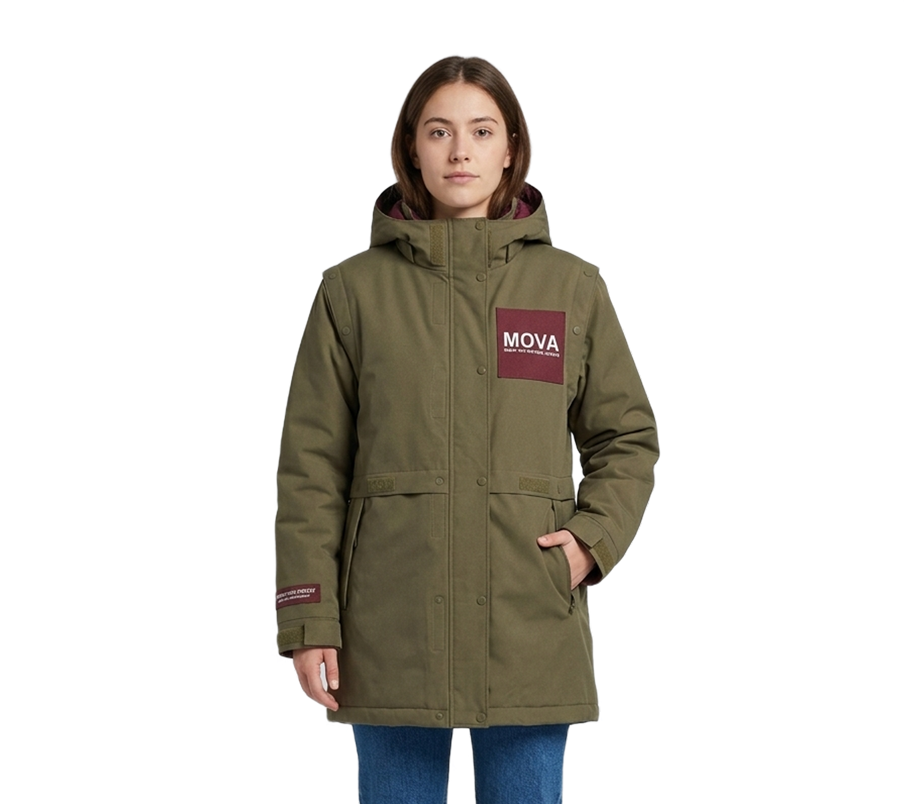

ABRIGO
MODULAR

diseñomova@gmail.cl
@mova

diseñomova@gmail.cl
@mova
Las prendas de abrigo se diseñan con mezclas heterogéneas irreversibles (tejido, forro, cierres, adhesivos) que imposibilitan su reciclaje textil-a-textil debido a la gran cantidad de materiales distintos que estos albergan.
El diseño industrial masivo empezó a desvincular la creación del vestuario de los oficios y talleres locales, invisibilizando el valor comunitario y centralizando las ganancias.
Inexistencia de canales abiertos que vinculen las toneladas de saldos textiles industriales existentes con patrones de diseño optimizados para su reutilización directa
85% vertederos o incinerados
73% se pierde antes de ser manipulada
1% reciclaje
Sistema de diseño textil basado en la compatibilidad material, la modularidad, la reparación, reutilización y la prolongación de la vida útil, poniendo en alto la colaboración y articulación de la red local.
Indumentaria exterior de alto rendimiento que combina funcionalidad, durabilidad y facilidad de reparación para reducir el descarte prematuro de prendas.
Fabricada íntegramente con poliéster reciclado de alta densidad, incluyendo tela exterior, forro, aislamiento térmico e hilos de costura.
La prenda se compone de módulos intercambiables que pueden ser reemplazados cuando presentan desgaste.
Plataforma abierta con acceso al patronaje e información técnica, promoviendo la colaboración y el desarrollo de nuevos diseños.
Usuarios que consumen prendas de abrigo en retail y buscan mayor durabilidad, reparación y trazabilidad. También se dirige a marcas de retail que necesitan avanzar hacia modelos circulares.
Extracción de materias primas → producción → distribución → uso → desecho. Las prendas mezclan materiales difíciles de separar, dejando el fin de vida en manos del consumidor.
MOVA busca transformar la compra de prendas en el retail mediante un sistema colaborativo que promueve la circularidad y beneficia tanto a las personas como al medioambiente.
Crea un diseño modular para la sostenibilidad integral de la prenda.
Diseñadores, comunidades locales y proveedores textiles crean la prenda junto a talleres locales.
La prenda llega a distribuidores y retail hasta el consumidor urbano y consciente.
El consumidor adquiere y utiliza la prenda a través del retail.
La prenda llega nuevamente al taller local para ser reparada y devuelta al usuario.
Reparación en taller local o derivación a plantas de reciclaje textil industrial.
MOVA se proyecta como un estándar de diseño circular integrable al retail, no como una marca de nicho. Frente a futuras regulaciones sobre residuos y huella de carbono, propone prendas modulares y monomateriales que reducen costos de gestión, recuperan material reciclado de alta pureza y fidelizan al usuario mediante reparación, retorno y actualización de prendas.
Isidora Escobar · Josefa Pérez · María Jesús Pizarro · Fransisca Salinas · Florencia Segretti · Luna Quintanilla